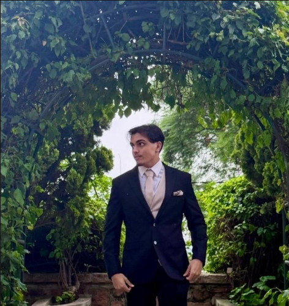

About Me
I'm a student in the Bachelor of Engineering Sciences in Digital Arts at the University of Witwatersrand with a passion for software development, game systems and user-centred digital experiences. Always eager to learn and grow, I enjoy exploring new technologies and design approaches to create engaging and innovative projects to expand my horizons.
My projects primarily combine technical problem solving with creative design, allowing me to build applications and games that are both functional and engaging.
What I Enjoy Building
Game Systems
Designing mechanics, progression systems, AI behaviours and gameplay loops.
Frontend Development
Creating responsive interfaces and interactive user experiences.
Problem Solving
Developing technical solutions through structured thinking and experimentation.
Key Strengths
- Gameplay System Design
- Object-Oriented Programming
- User Interface Development
- AI and Rule-Based Systems
- Responsive Web Design
- Team Collaboration
Beyond Development
Outside of development I enjoy exploring game design and discovering how I can apply my skills to different types of projects through consistency and discipline. I am an avid electric guitar player and reader allowing me to enjoy learning new techniques, finding new perspectives as well as creating my own music. I also have a strong interest in emerging sciences such as virtual reality, quantum mechanics and artificial intelligence which I continuously explore in my free time.
Furthermore, I am a firm believer in the power of collaboration and community in the tech industry. I enjoy connecting with other developers, sharing knowledge and learning from others' experiences. My goal is to always be learning and evolving as a developer & person while contributing to a positive and inclusive tech community where everyone can thrive and grow together.
Lastly, I firmly believe in giving back to the community where possible. In high school, I was involved in various charity initiatives and community service projects, and I hope to continue contributing to causes that matter to me in the future to better understand myself and the various different cultures that exist out there.